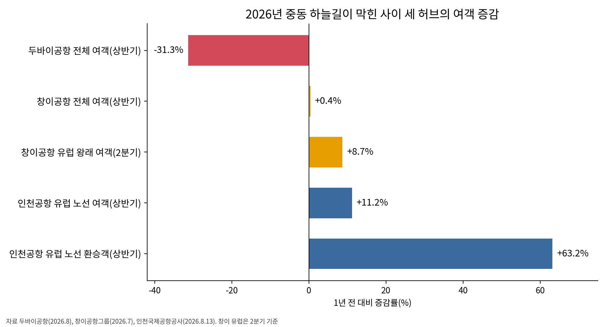

두바이 막힌 사이 유럽 환승 63%↑, 인천공항 빌린 환승객 붙잡아야
상반기 두바이 여객 31%↓, 인천 유럽 환승 21만명
환승객은 값·시간·연결로 허브 골라
두바이 2032년 알막툼·창이 T5, 허브 증설 경쟁
AI경제저널=김갑봉 기자 | 올해 상반기 인천공항 유럽 노선 환승객은 21만3542명이다. 인천국제공항공사가 8월 13일 낸 자료를 보면 1년 전보다 63.2% 늘었다. 같은 기간 유럽 노선 전체 여객은 250만1813명으로 11.2% 늘었다. 환승이 노선 전체보다 다섯 배 넘게 빨리 늘었다.
같은 반년 동안 미국과 이란 전쟁으로 걸프 하늘길이 막히자 두바이국제공항(DXB) 여객은 3150만명으로 31.3% 줄었다. 공사는 두바이를 거쳐 유럽으로 가던 수요가 인천발 직항과 인천 환승으로 넘어왔다고 봤다. 인천 유럽 환승은 동북아 경제블록 밖 허브가 멈춘 자리에서 늘었다.
블록 밖 환승 경쟁은 블록 안 다툼과 상대가 다르다. 아시아와 유럽을 잇는 환승객을 놓고 인천은 두바이, 싱가포르 창이와 겨룬다. 두 곳 모두 정부가 공항 확장을 직접 이끈다.
두바이가 멈춘 반년, 흩어진 아시아~유럽 환승
두바이공항은 지난해 9520만명을 처리해 사상 최다 기록을 세웠다. 올해 1분기 여객은 1860만명으로 1년 전 2340만명보다 줄었다. 2분기는 1300만명으로 1년 전 2250만명보다 42% 적었다. 월 여객은 4월 350만명, 5월 450만명, 6월 500만명으로 되살아났다.
공항이 문을 열어도 항공사가 돌아와야 환승이 살아난다. 루프트한자는 10월 25일에야 뮌헨~두바이 운항을 다시 연다. 영국항공은 11월 초에야 런던~두바이 운항을 재개한다. 대한항공 인천~두바이 노선은 2월 28일 이후 아직 다시 뜨지 못했다.
그 길을 쓰던 승객은 다른 허브로 흩어졌다. 창이공항그룹 집계로 2분기 창이와 유럽을 오간 여객은 8.7% 늘었다. 항공사가 창이와 유럽 사이 좌석을 늘린 결과다. 그러나 항공유값이 뛰어 동남아 노선 여객이 5% 줄면서 창이 전체 여객은 상반기 0.4% 느는 데 그쳤다.

환승객은 값과 시간과 연결로 허브를 고른다
서울과 수도권에서 해외로 나가는 승객은 인천 말고 고를 공항이 마땅치 않다. 그러나 동남아에서 미주로, 중국에서 유럽으로 가는 환승객은 인천을 거치든 두바이나 창이를 거치든 닿는 곳이 같다. 환승객은 언제든 허브를 바꿀 수 있는 손님이다.
캐나다 브리티시컬럼비아대 등 연구진이 2019년 국제학술지에 낸 연구가 이를 보여 준다. 연구진은 동남아~북미 78개 도시쌍에서 승객이 어느 공항을 거쳐 갈아타는지 분석했다. 운임과 여행시간만 선택을 가르지 않았다. 최소 연결시간과 연결 서비스 품질도 갈아탈 공항을 갈랐다.
연구진은 공항 특성마다 승객이 얼마를 더 낼 뜻이 있는지 셈했다. 인천공항을 사례로 환승객을 늘릴 후보 노선도 골랐다. 갈아타는 시간과 연결 품질이 승객을 붙잡는 힘이라는 뜻이다.
블록 밖 허브는 이 경쟁에 강했다. 독일 대학 연구진이 참여해 2017년 낸 연구는 예약자료로 유럽과 중동 허브가 장거리 환승객을 두고 벌이는 경쟁을 분석했다. 중동 허브는 경쟁 지위를 높였고 유럽 허브는 경쟁에 더 많이 노출됐다. 올해 인천이 얻은 유럽 환승은 본래 중동 허브 몫이었다.
두바이는 2032년 알막툼으로, 창이는 T5로
두바이는 물러서지 않는다. 두바이공항은 올해 여객 전망을 1억명에서 약 7000만명으로 낮추고 1억명 목표를 2027년으로 미뤘다. 폴 그리피스 두바이공항 사장은 10월 말 겨울 운항 일정부터 유럽과 미국 항공사가 돌아와 연말쯤 운항이 모두 되살아난다고 내다봤다.
큰 투자도 그대로다. 두바이는 350억달러(약 46조7000억원, 10월 12일 환율)를 들여 알막툼국제공항(DWC)에 새 여객터미널을 짓고 있다. 1단계는 2032년에 열고 다 지으면 연 2억6000만명을 받는다. 그리피스 사장은 전쟁으로 공사가 늦어졌느냐는 물음에 아니라고 답했다.
창이도 몸집을 키운다. 로런스 웡 싱가포르 총리는 2025년 5월 14일 창이 제5터미널(T5) 착공식에서 첫 삽을 떴다. T5는 연 5000만명가량을 더 받아 창이 수용 능력을 절반 넘게 늘린다. 웡 총리는 2030년대 중반까지 연결 도시를 200곳이 넘도록 늘리겠다고 밝혔다.
두 허브 셈법은 같다. 전쟁과 항공유값 같은 충격은 지나가고 환승 수요는 돌아온다고 본다. 그래서 충격을 맞은 해에도 활주로와 터미널을 늘린다. 인천이 전쟁 덕에 얻은 몫을 세는 동안 두 허브는 다음 경쟁을 준비한다.
빌린 환승객을 단골로
공사 8월 13일 보도자료는 첫머리에서 상반기 국제여객 세계 1위를 대한민국 항공정책이 거둔 쾌거라고 불렀다. 같은 자료 본문은 중동 공항 환승 기능이 약해져 그 수요가 인천으로 대체됐다고 적었다. 첫머리는 정책을 말하고 본문은 전쟁을 말한다. 행간을 읽으면 올해 성적 상당 부분은 빌려 온 몫이다.
빌린 것은 돌려줄 때가 오지만 그때는 아직 알 수 없다. 10월 10일 사우디아라비아 리야드 킹칼리드국제공항 여객터미널이 예멘 후티 반군 미사일에 맞아 최소 12명이 숨졌다. 그래도 걸프 허브가 제 모습을 되찾으면 인천 유럽 환승 상당 부분은 걸프로 되돌아갈 가능성이 높다.
붙잡을 길은 연결이다. 환승객은 연결시간과 연결 품질에 값을 치른다. 유럽행 출발편과 아시아 각지 도착편을 촘촘히 맞물리고 갈아타는 시간을 줄여야 한다. 전쟁 덕에 인천을 처음 거친 승객이 다음에도 인천을 골라야 단골이 된다.
인천에 주어진 시간은 걸프 허브가 제 모습을 되찾기 전까지다. 빌린 환승객은 언젠가 떠난다. 그 사이 쌓은 연결만 인천 몫으로 남는다.
참고문헌
기관 자료
- 인천국제공항공사, "인천공항, 아시아나항공 밀라노·부다페스트 신규 취항으로 유럽 노선 직항 경쟁력 강화", 2026년 3월 31일. https://www.airport.kr/bbs/co_ko/84/139312/artclView.do
- 인천국제공항공사, "인천공항, 개항이후 처음으로 상반기 국제여객 세계 1위 달성", 2026년 8월 13일. https://www.airport.kr/bbs/co_ko/84/139530/artclView.do
- Prime Minister's Office Singapore, "PM Lawrence Wong at the Changi Airport Terminal 5 Groundbreaking Ceremony", 2025년 5월 14일. https://www.pmo.gov.sg/newsroom/pm-lawrence-wong-at-the-changi-airport-terminal-5-groundbreaking-ceremony/
- Changi Airport Group, 「Changi East Development」, 2026년 10월 12일 조회. https://www.changiairport.com/en/corporate/about-us/future-developments/changi-east.html
연구 논문
- Grosche, T., Klophaus, R., & Seredyński, A., "Competition for long-haul connecting traffic among airports in Europe and the Middle East", 『Journal of Air Transport Management』 64(A), 2017년, pp.3-14. https://doi.org/10.1016/j.jairtraman.2017.06.019
- Choi, J. H., Wang, K., Xia, W., & Zhang, A., "Determining factors of air passengers' transfer airport choice in the Southeast Asia – North America market: Managerial and policy implications", 『Transportation Research Part A: Policy and Practice』 124, 2019년 6월, pp.203-216. https://doi.org/10.1016/j.tra.2019.03.008
언론기사
- Natasha Turak, "Dubai's new airport will be five times the size of its current one", CNBC, 2024년 4월 30일. https://www.cnbc.com/2024/04/30/dubais-new-airport-will-be-five-times-the-size-of-its-current-one.html
- 류인선, "대한항공, 두바이 노선 운항 중단 8월2일까지 연장…'공역 제한 영향'", 뉴시스, 2026년 5월 8일. https://www.newsis.com/view/NISX20260508_0003622364
- "Mixed second quarter for traffic at Singapore Changi", Airport World, 2026년 7월 24일. https://airport-world.com/mixed-second-quarter-for-traffic-at-singapore-changi/
- Edward Hardy, "Singapore Changi Airport's operating indicators for Q2 2026", Air Cargo Week, 2026년 7월 27일. https://aircargoweek.com/singapore-changi-airports-operating-indicators-for-q2-2026/
- Neesha Salian, "DXB traffic recovery gathers pace as passenger volumes climb through Q2", Gulf Business, 2026년 8월 26일. https://gulfbusiness.com/en/2026/aviation/dxb-traffic-recovery-gathers-pace-as-passenger-volumes-climb-through-q2/
- Deena Kamel, "Dubai to award Dh55bn in contracts by year-end for Al Maktoum Airport expansion", The National, 2026년 8월 26일. https://www.thenationalnews.com/business/aviation/2026/08/26/dubai-to-award-dh55bn-in-contracts-by-year-end-for-al-maktoum-airport-expansion/
- Waheed Abbas, "No slowdown in Al Maktoum airport construction despite regional conflict: Dubai Airports chief", Khaleej Times, 2026년 8월 26일. https://www.khaleejtimes.com/business/no-slowdown-in-al-maktoum-airport-construction-despite-regional-conflict-dubai-airports-chief
- Inzamam Rashid, "War knocked Dubai's airport traffic down 31%. Its CEO says its global hub ambitions haven't changed", Fortune, 2026년 9월 1일. https://fortune.com/2026/09/01/war-knocked-dubai-airport-traffic-down-31-ceo-paul-griffiths-global-hub-ambitions/
- Federico Maccioni, "Dubai Airports projects 70mln passengers this year as traffic recovers, CEO says", Reuters(Zawya 전재), 2026년 9월 10일. https://www.zawya.com/en/business/dubai-airports-projects-70mln-passengers-this-year-as-traffic-recovers-ceo-says-548618
- Deborah O'Donoghue, "Lufthansa Group to resume Dubai flights from late October as Middle East network rebuilds", Travel Tomorrow, 2026년 9월 10일. https://traveltomorrow.com/lufthansa-group-to-resume-dubai-flights-from-late-october-as-middle-east-network-rebuilds/
- "Middle East flights: Singapore Airlines, Scoot and Wizz Air extend suspensions", The National, 2026년 10월 8일. https://www.thenationalnews.com/travel/2026/10/08/uae-dubai-abu-dhabi-flights-status/
- "Yemen fighting expands as Houthis attack Saudi airport again: What to know", Al Jazeera, 2026년 10월 11일. https://www.aljazeera.com/news/2026/10/11/yemen-fighting-expands-as-houthis-attack-saudi-airport-what-to-know
- 정상균, "원·달러 환율 1335원, 2년 만에 최저..한은 총재 '아직 예년보다 높아'", 파이낸셜뉴스, 2026년 10월 12일. https://www.fnnews.com/news/202610121843111431
사진 출처
- [도표1] 경세제민 AI·경제연구소 작성, 자료 두바이공항(Gulf Business 2026년 8월 26일 보도)·창이공항그룹(2026년 7월)·인천국제공항공사(2026년 8월 13일)
※ 이 기사는 인공지능을 활용해 작성했습니다. 사실관계는 저자가 확인했습니다.
관련기사
- 착륙료 10년·계류장 25년 묶은 인천공항, 싼 값이 항공사를 붙잡는가
- [글로벌 인천공항⑬] 인천공항 44% 외국인, 연말 끝나는 비자 특례 상설로
- 나리타 환승 6%↓ 인천 20%↑, 도쿄와 다투는 일본발 미주 환승
- 환승률 9.51% 인천공항, 허브는 10%를 지켜야
저작권자 © AI경제저널 무단전재 및 재배포, AI학습 및 활용 금지